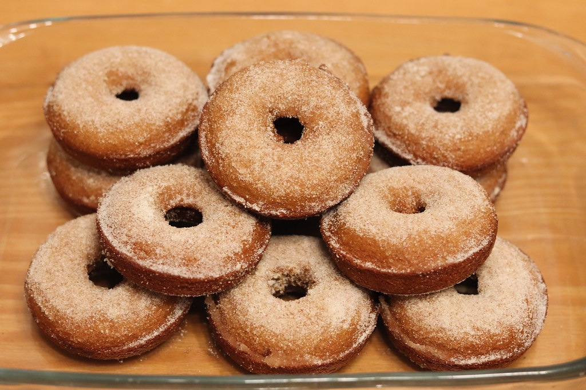

※写真はイメージです(仮素材)

長野県飯田市の一角にある、ごく小さなベーグル専門店です。店内には種類豊富なベーグルが並び、お惣菜やお野菜も一緒にお買い求めいただけます。小さな店だからこそ生まれる、ゆったりとした時間をお楽しみください。
※写真はイメージです(仮素材)

※写真はイメージです(仮素材)
ベーグルと一緒に並ぶのは、お惣菜やお野菜たち。パンだけでなく、その日のお惣菜もあわせてお買い求めいただけます。品目は日によって変わりますので、どうぞ店頭でのお楽しみに。
※写真はイメージです(仮素材)
※すべて「ご来店のお客様の声」として要約・言い換えたものです。投稿者名・個人情報は含みません。
種類豊富なベーグルに思わず迷ってしまうほど。プレッツェルベーグルは外はパリッ、中はもちもちで食べやすいと好評です。かぼちゃの塩バターベーグルも、噛むほどに広がる甘さが魅力とのお声をいただいています。
開店してすぐに訪れ、数種類を購入されたお客様からは、プレッツェルベーグルの風味の良さとほのかな塩味、そして店主の明るい接客についてのお声をいただきました。
こじんまりとした店内は3〜4人ほどでいっぱいになりますが、出来立ての温かいベーグルやお惣菜に心惹かれ、見た目の可愛らしさに思わず悩んでしまうというお声も届いています。
お車でお越しの際は、駐車場の場所が分かりにくいとのお声もありますので、事前にお問い合わせいただくと安心です。
小さなお店で、あなたをお待ちしております。まずはメニューやアクセス情報をご覧ください。